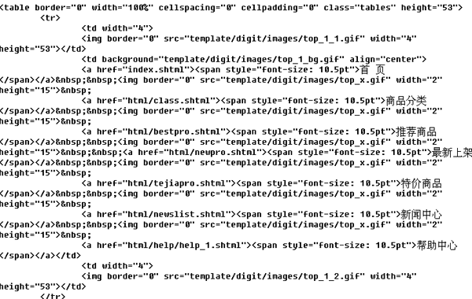

NPS模板设计原则与技巧
掌握NPS模板制作的技巧，提升模板的通用性，可以大幅度降低整个网站的模板数，提高网站的可维护性，同时良好的规划，还有利于提高整个网站的访问速度。
例如博库书城(www.bookuu.com)这样内容丰富、表现形式多样的网站，模板数量也没有超过10个。
只要掌握恰当的方法，遵循以下的设计原则和注意事项，就能轻松制作和管理网站模板了。


尽量使用DIV+CSS布局
DIV+CSS布局较Table布局减少了页面代码，加载速度得到很大的提高，这在spider爬行时是非常有利的。过多的页面代码可能造成爬行超时，spider就会认为这个页面无法访问，影响收录及权重。
table结构的代码长度：

div+css结构的代码长度：
搜索引擎一般不抓取三层以上的表格嵌套，这一点一直没有得到搜索引擎官方的证实。
根据目前掌握的情况来看，spider爬行Table布局的页面，遇到多层表格嵌套时，会跳过嵌套的内容或直接放弃整个页面。
使用Table布局，为了达到一定的视觉效果，不得不套用多个表格。如果嵌套的表格中是核心内容，spider爬行时跳过了这一段没有抓取到页面的核心，这个页面就成了相似页面。
网站中过多的相似页面会影响排名及域名信任度。
提高重用性
重用性的重点是页面模板的设计规划。模板的重用性设计要和SHTML的SSI或JSP的INCLUDE指令结合起来使用。充分利用这两个功能有利于提高模板的重用性。
- 善用SHTML网页的INCLUDE指令
-
变化的内容才需要形成模板。基本不变的内容，可以直接放在SHTML中，通过FTP上传就可以了。
例如网站的页眉页脚是基本不变的，就没有必要制作成模板文件了。相反可以形成一个特定的网页文件，例如head.inc，让其他的SHTML页面包含就可以了。这样一旦要修改页眉页脚，还容易进行批量修改。
<!--#include virtual="/head.inc"-->
以sina新闻首页(news.sina.com.cn)国内新闻、国际新闻两个栏目为例进行说明。
一般来说，按以下模板分割方案，可以做成两个页面模板，如下图所示。
实际上，完全可以使用一个页面模板就可以支持。模板切割如下图所示。
我们将标题和更多选项剔除，这部分内容写入首页index.shtml文件中，而将中间的正文内容写入模板。 - 充分利用全局标签
-
在页面模板输出文件中，可以使用全局标签。合理利用<$top_url$>或<$top_path$>标签将大大简化工作。
还是以sina的国内新闻和国际新闻为例，页面模板输出路径可以写成<$top_url$>/index_include.inc， 假设这两个栏目都顶级栏目新闻（栏目代号news）下，国内新闻的栏目代号为china，国际新闻的栏目代号为internation, 那么，将生成/news/china/index_include.inc和/news/internation/index_include.inc两个文件。 我们只要在index.shtml中相应位置使用include指令包含就可以了。例如：
<--#include virtual="/news/china/index_include.inc" -->
<--#include virtual="/news/internation/index_include.inc" -->
- 妙用RS标签
-
通常在页面模板中需要大量使用RS标签。对于RS标签，除非特定栏目的读取，建议少用topic参数指定以增加灵活性。
例如，<rs id="rs1" topic="news.china">
如果改写为<rs id="rs1">
那么，当该页面模板被添加到国内新闻和国际新闻栏目下。当发布国内新闻时，他将自动读取将国内新闻（news.china）的文章； 当发布国际新闻时，将自动读取国际新闻（news.internation）的文章。